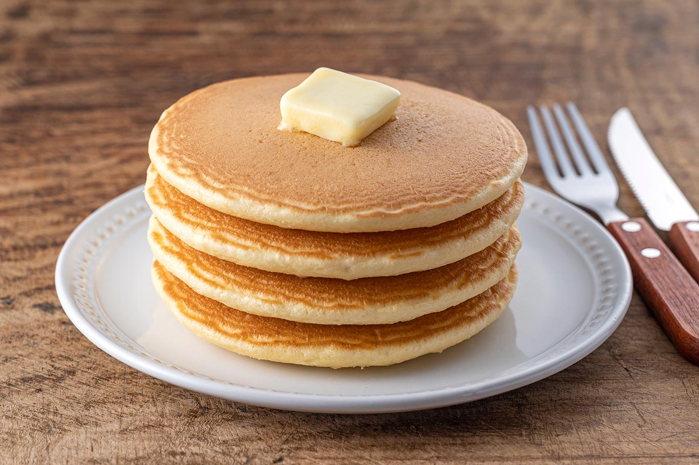

Panqueques
Ingredientes
- 1 taza de harina leudante o harina de repostería
- 1 huevo
- 1 chorro de aceite de oliva
- ¾ taza de leche (180 mililitros)
- 1 cucharadita de mantequilla
- 1 chorro de miel
Pasos
- Coloca la harina en un bol y añade el huevo y la leche. Mezcla bien hasta que se integren estos ingredientes y no queden casi grumos.
- Para terminar de hacer la masa de los panqueques caseros, agrega un chorrito de aceite y mezcla bien. Verás que el aceite hace que se terminen de disolver los grumos de harina y quede una masa lisa y homogénea.
- Para hacer los panqueques, calienta una sartén a fuego medio-bajo con un poquito de aceite o mantequilla. Cuando la sartén esté caliente, añade una cucharada de mezcla y déjala al fuego hasta que empiecen a salir burbujas en la superficie, entonces dale la vuelta y cocina por el otro lado.
- Para servir la receta de panqueques súper fáciles de hacer, añade un poquito de mantequilla y miel y a disfrutar.